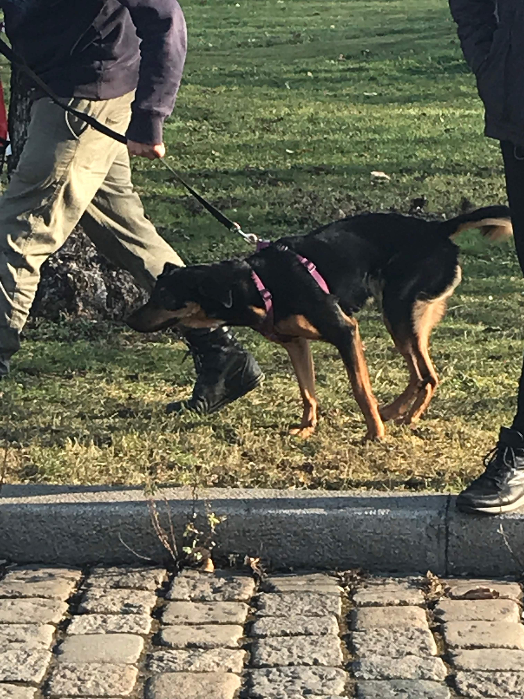
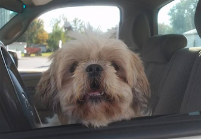
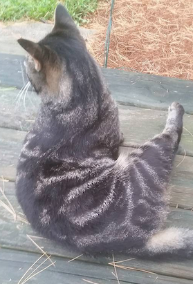
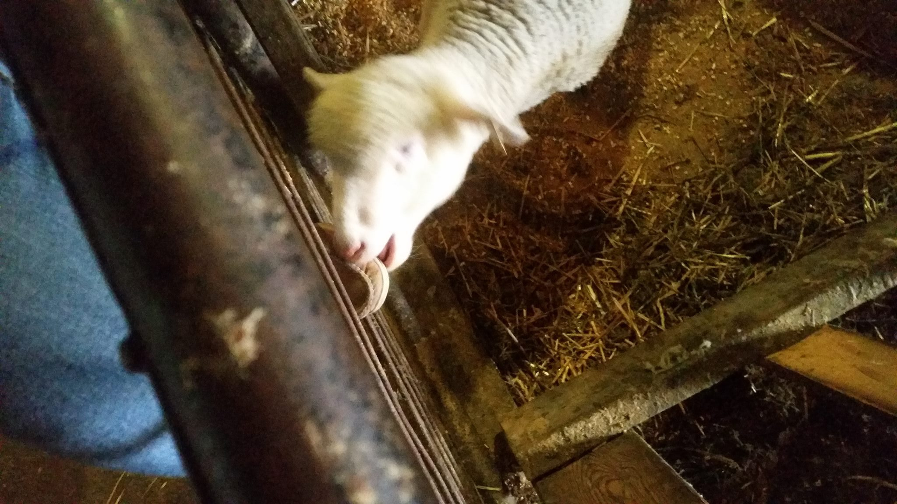
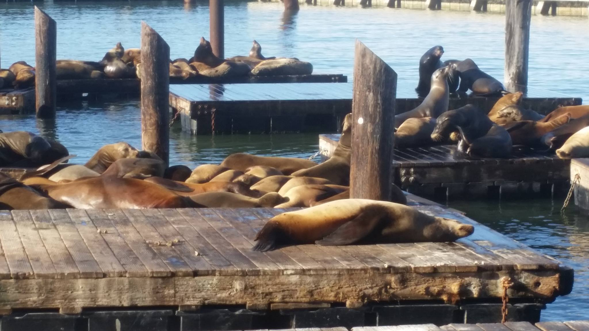
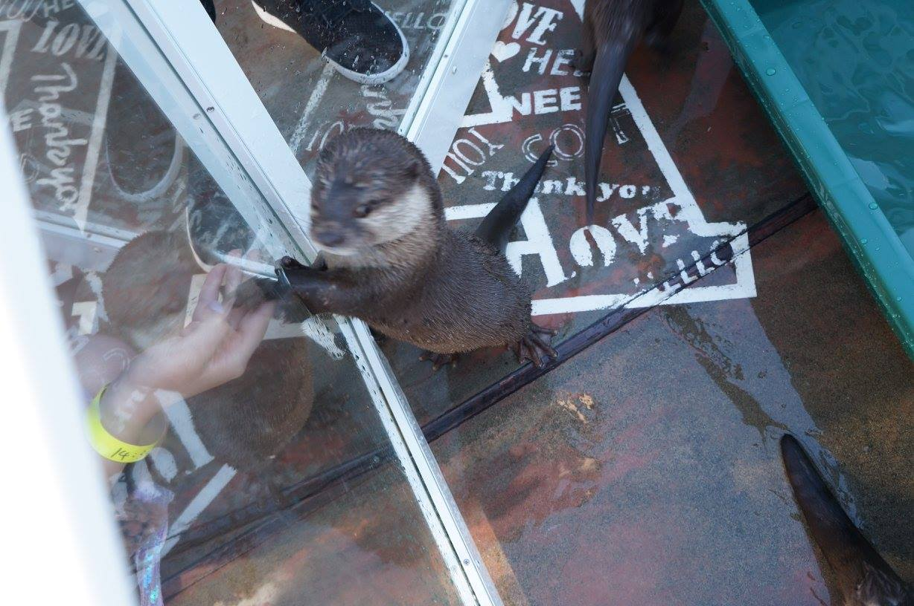
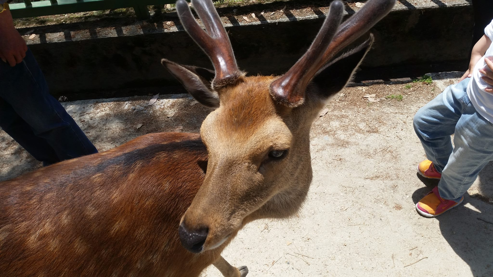
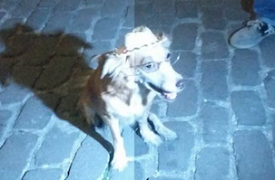

Can't move anymore
I feel ya, doggo! It's so warm, and you're so furry.
Can't move anymore
I feel ya, doggo! It's so warm, and you're so furry.
 Vulnerable Ghibli cat
I appreciate that Dad and Uncle Sam got rid of their comb-overs, which had been kept over two decades. #AloeDoesntWork
Vulnerable Ghibli cat
I appreciate that Dad and Uncle Sam got rid of their comb-overs, which had been kept over two decades. #AloeDoesntWork

Eine Kartoffel
This kartoffel just flipped over.
Buda dogs
Seeing them in a Starbucks by my fav bridge in Buda was magical.
Dog by the parliament
It ran up to me by the Hungarian parliament.
my spirit animal
This is my first time seeing a sloth, and idk how to explain my feeling.
Aussie animals??
I saw this in the Try Guys' Try Australia series.
That only dog
This is the only dog I saw in Santorini.
Hangry cats
Restaurants in Santorini are kinda like cat cafes but with more cats.
Waiting
When your owner was in the ruins and you couldn't go in.
Dog with a good posture
This dog's posture was so much better than mine.
Barcelona dog gang
I got churros and dogs, and I survived from cuteness overdose.
Birdy bird
I think he is French.
Massive dog
His hand is bigger than mine.
Dog in rome
Look at his eyes.
 Cat in the Ruins
Wonder whether apostle Paul had a cat on his lap while sharing the Gospel in Ephesus.
Cat in the Ruins
Wonder whether apostle Paul had a cat on his lap while sharing the Gospel in Ephesus.
 The restaurant cat
I got a menemen at this restaurant in Kadikoy. Menemen is a Turkish vegetarian breakfast dish made with eggs and tomatoes.
The restaurant cat
I got a menemen at this restaurant in Kadikoy. Menemen is a Turkish vegetarian breakfast dish made with eggs and tomatoes.
 The tres-legged dog
The dog on the left drinking water survived a shooting in Texas when he was one, and after that, he was left with three legs. #Rescued
The tres-legged dog
The dog on the left drinking water survived a shooting in Texas when he was one, and after that, he was left with three legs. #Rescued
 FDR's dog
"You know, Fala is Scotch, and being a Scottie, as soon as he learned that the Republican fiction writers in Congress and out had concocted a story that I'd left him behind on an Aleutian island and had sent a destroyer back to find him— at a cost to the taxpayers of million of dollars— his Scotch soul was furious. He has not been the same dog since."
FDR's dog
"You know, Fala is Scotch, and being a Scottie, as soon as he learned that the Republican fiction writers in Congress and out had concocted a story that I'd left him behind on an Aleutian island and had sent a destroyer back to find him— at a cost to the taxpayers of million of dollars— his Scotch soul was furious. He has not been the same dog since."
 Sassy sheep
Elise and I decided to get on a morning walk before the sermons during Fall retreat, and we saw this girl.
Sassy sheep
Elise and I decided to get on a morning walk before the sermons during Fall retreat, and we saw this girl.

Hank the boss
It took us 7 hours driving down to East Lansing. We met this dog at a gas station, and his owner said that Hank thinks that he is a boss.

Raw-fish diet
The lab I interned in in Summer 2017 drove over to East Lansing and picked me up for their Fall retreat in Northern Michigan. They gave raw fish to the Airbnb owner's cat.
 Follow the Mama duck
Saw this on my way from church to work on a Sunday. Mama duck was leading the ducklings down to the Grand River from Van Andel.
Follow the Mama duck
Saw this on my way from church to work on a Sunday. Mama duck was leading the ducklings down to the Grand River from Van Andel.
 A cat needed patting
Still in Bergen. She stopped, and I patted her.
A cat needed patting
Still in Bergen. She stopped, and I patted her.
 Dog from Bergen
I went on a hike in Bergen, and this dog was outside of a restaurant.
Dog from Bergen
I went on a hike in Bergen, and this dog was outside of a restaurant.
 Cow not to be crossed
This cow had some genetic defects, which was not desirable to be crossed.
Cow not to be crossed
This cow had some genetic defects, which was not desirable to be crossed.

Munching Emmy's shoe
Emmy worked in MSU sheep farm in Spring 2017, and she moved out and lived in the sheep farm that semester. Apparently, this sheep thought Emmy's shoe was edible.

Sleepy seals
I head up to NoCal after celebrating Christmas with my fam in SoCal. The seals are tanning all day every day.

Very fierce otter
This petting cafe is also on Omotesando Rd. They have a pool for three otters, and feeding them is somewhat expensive.
 Heavy hedgehog
There are several hedgehog cafes on Omotesando Rd. (near Meiji Jingu) in Tokyo. This hedgehog was hiding itself in the food to eat all day every day.
Heavy hedgehog
There are several hedgehog cafes on Omotesando Rd. (near Meiji Jingu) in Tokyo. This hedgehog was hiding itself in the food to eat all day every day.
 Cat
This is from a pretty typical Japanese cat cafe. The owner asked me about the scratches I got from feeding a squrriel back in Gifu.
Cat
This is from a pretty typical Japanese cat cafe. The owner asked me about the scratches I got from feeding a squrriel back in Gifu.
 Scary squrriel
This is in Gifu. You have to take a cable car to get up to the castle. There's this squrriel petting zoo right next to the cable car station on the mountain.
Scary squrriel
This is in Gifu. You have to take a cable car to get up to the castle. There's this squrriel petting zoo right next to the cable car station on the mountain.
 Sheep squad
During a class in my studying abroad progam in rural Japan. My environmental study squad did a ton of hiking that summer, and we had to bike to school for 45 minutes everyday.
Sheep squad
During a class in my studying abroad progam in rural Japan. My environmental study squad did a ton of hiking that summer, and we had to bike to school for 45 minutes everyday.

Daring deer
Deers in Nara are very well-fed by tourists. I bought a stack of crackers to feed them, and there's this deer putting the entire stack of crackers and my wallet into its mouth.

Gramma dog
Met her in the middle of downtown Havana on our day-off. We also got very magical churros.
 Chloe from Havana
Chloe followed my mission team through Havana. I was on a mission trip with Cru and Filter of Hope to distribute water filters and share the Gospel to Cuban families!
Chloe from Havana
Chloe followed my mission team through Havana. I was on a mission trip with Cru and Filter of Hope to distribute water filters and share the Gospel to Cuban families!